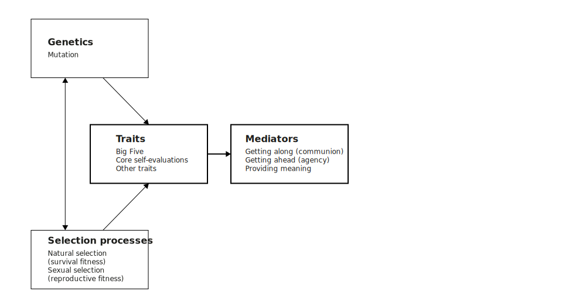
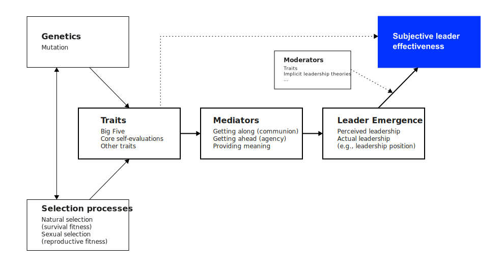
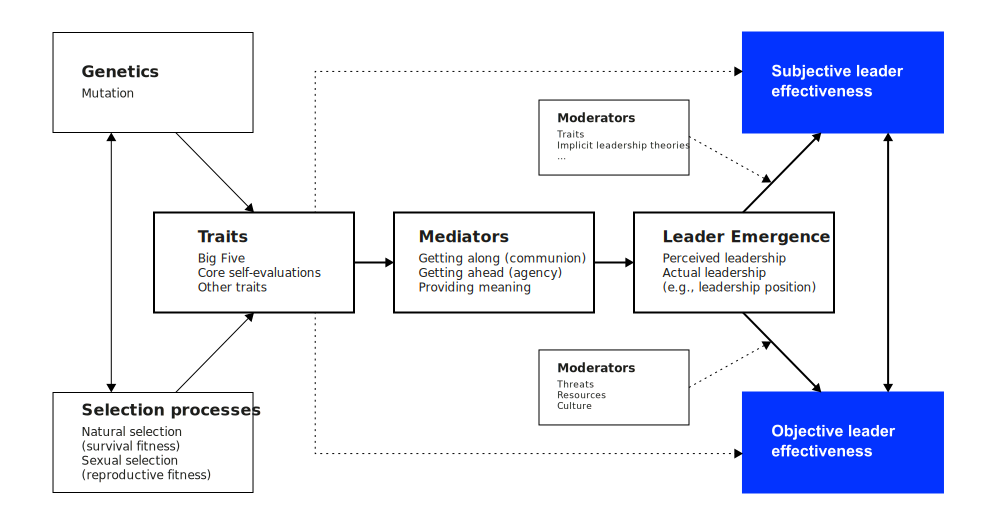

Leader characteristics
What makes an effective leader?
Neu-Ulm University of Applied Sciences
February 14, 2024
Introduction
What was the most interesting finding in reading Judge et al. (2002)?
Leadership depends on the personal qualities of the leader. Trait theory
Height?

The Big Five
Neuroticism, extraversion, openness to experience, agreeableness, and conscientiousness.
Dicussion
What traits distinguish leaders from other people?
Relation to leadership

Dicussion
Which of the traits seems to be important for the digital era?
Dicussion
But, how do traits emerge?
Emergence of traits
Traits have a genetic source and are the result of adaptive processes Judge, Piccolo, and Kosalka (2009).
The Leader Trait Emergence Effectiveness (LTEE) model




Dicussion
Could it be that personality traits lead to an advantage under certain conditions, while another situation they become a serious disadvantage?
Trait paradoxes
| Trait | Bride Side | Dark Side |
|---|---|---|
| Extraversion | Greater leadership emergence; higher job and life satisfaction | More impulsive (deviant) behaviors; more accidents |
| Agreeableness | Higher subjective well-being; lower interpersonal conflict; lower turnover | Lower career success; less capable of conflict; more lenient in giving ratings |
| Conscientiousness | Stronger job performance; higher leadership effectiveness; lower deviance | Reduced adaptability; lower learning in initial stages of skill acquisition |
| Emotional stability | High job/life satisfaction; better job performance; effective leadership; retention | Poorer ability to detect risks and danger; more risky behaviors |
| Openness | Higher creativity; greater leadership effectiveness; greater adaptability | More accidents and counterproductive; rebelliousness; lower commitment |
Dicussion
Any new, surprising insights for you?
Emotional intelligence
Intelligence is the most “successful” trait in social and applied psychology (Judge, Piccolo, and Kosalka 2009).
Goleman (2004) argues that it is not IQ (intelligence, a trait), but emotional intelligence that sets apart great leaders.
Emotional intelligence is a group of five skills that enable the best leaders to maximize their own and their followers’ performance:
- Self-awareness—knowing one’s strenghts, weaknesses, drives, values, and impact on others
- Self-regulation—controlling or redirecting disruptive impulses and moods
- Motivation—relishing achievements for its own sake
- Empathy—understanding other people’s emotional makeup and treating them according to their emotional reactions
- Social skill—building rapport with others to move them in decired directions
Group work
Read Goleman (2004) and summarize the characteristics of one skill.
Find an example, discuss its importance as well as pathways to strengthen it.
Also discuss if the skill is gaining importance in the digital era and why (not).
Conclusion
It is fortunate, then, that emotional intelligence can be learned. Goleman (2004)
Q&A
Homework
Read Lavine (2014) and answer following questions:
- What is ambidexterity, what is behavioral complexity?
- Why does a complex world require behavioral complexity?
- Which leadership paradoxes are identified by the CVF? Can you give specific examples for each?
- How do the paradoxes relate to the specifics of the digital era?